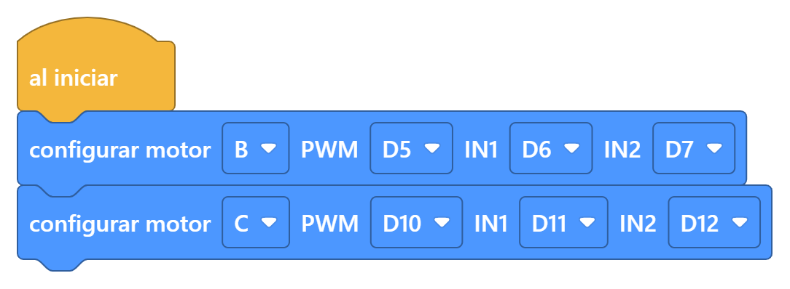
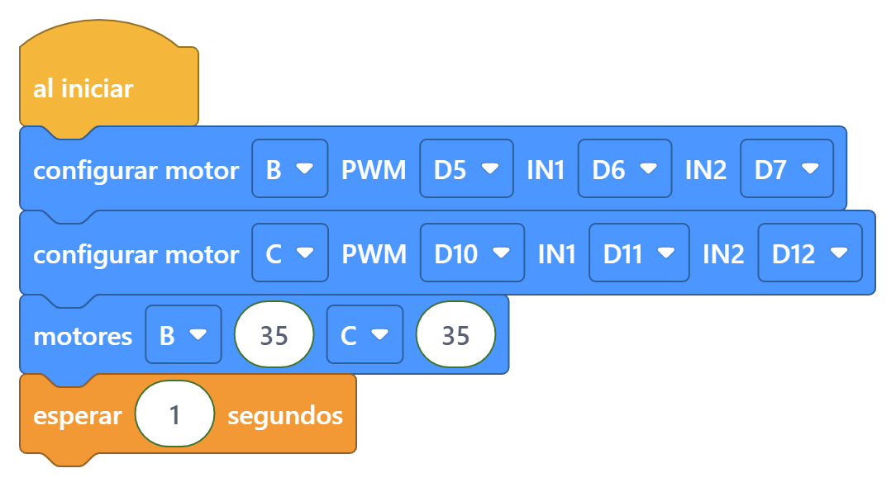
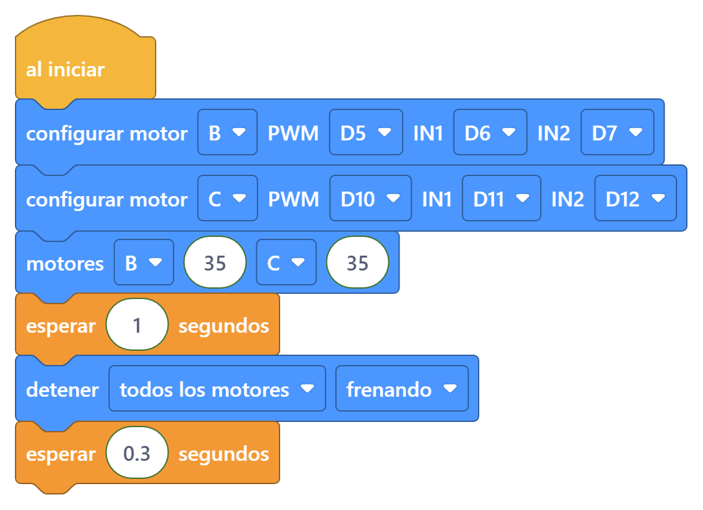
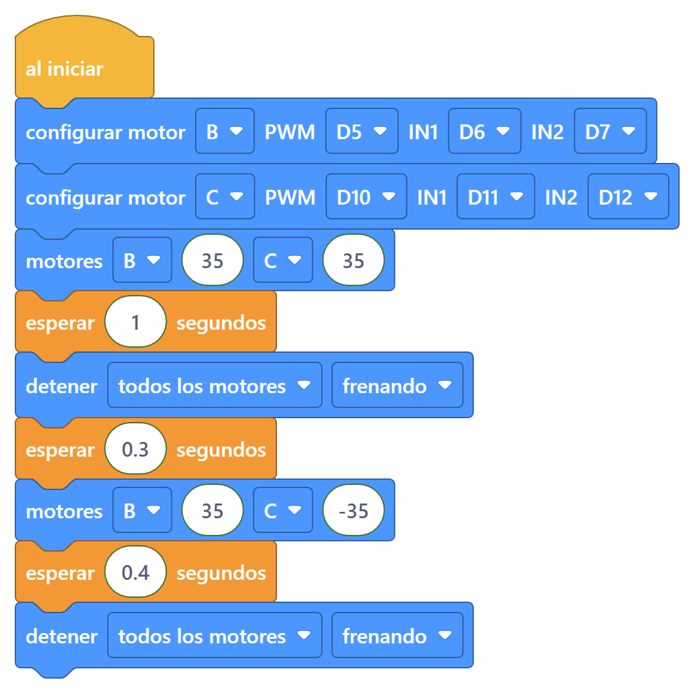

5 · Tu primer robot
5.1 Avanzar y girar por tiempo
Lo que vas a aprender
Enseña al robot a avanzar, hacer una pausa, girar sobre su lugar y detenerse.
Qué necesitas
- Tu tarjeta y un cable USB de datos.
- Una computadora con GreyForge instalado.
- Puente H de dos canales con entradas PWM, IN1 e IN2 por canal, por ejemplo un TB6612FNG con STBY accesible.
- Dos motores de corriente directa, batería adecuada para los motores y cables.
- Chasis con dos ruedas motrices y un apoyo libre, como una rueda loca.
| Componente o señal | Conecta a |
|---|---|
| PWMA, AIN1, AIN2 (motor B) | D5, D6, D7 |
| PWMB, BIN1, BIN2 (motor C) | D10, D11, D12 |
| VCC y STBY | 5 V de la tarjeta |
| VM | Positivo de la batería para motores |
| GND | GND de la tarjeta y negativo de la batería |
| Motor izquierdo | Salidas A01 y A02 del puente |
| Motor derecho | Salidas B01 y B02 del puente |
Alimenta los motores con batería. Conecta la batería a VM del puente H. Usa el USB solo para la tarjeta y une los GND.
Pasos
Las imágenes muestran el programa de la Arduino UNO R3.
Para otra tarjeta, usa los pines de la tabla del puente H.
-
Monta los motores
Conserva el puente H y el cableado de la lección 4.3. Asegura la batería al chasis y deja espacio para probar.
-
Configura B y C
Debajo de «al iniciar», coloca dos «configurar motor … PWM … IN1 … IN2 …» de Motores. Elige B con PWM D5, IN1 D6 e IN2 D7, y debajo C con PWM D10, IN1 D11 e IN2 D12.
Al iniciar, se configuran el motor B con D5, D6 y D7 y el C con D10, D11 y D12. 
-
Avanza recto
Debajo de la configuración de C, coloca «motores B 35 C 35» de Motores. Añade «esperar 1 segundos» de Control debajo.
Al iniciar, configura B y C y los mueve a 35 durante 1 segundo. 
-
Frena antes del giro
Debajo de la espera, coloca «detener todos los motores frenando» de Motores. Añade «esperar 0.3 segundos» de Control debajo.
Después de avanzar un segundo, ambos motores frenan durante 0.3 segundos. 
-
Gira y detente
Debajo de la pausa, coloca «motores B 35 C −35» de Motores y «esperar 0.4 segundos» de Control. Al final encaja «detener todos los motores frenando» de Motores.
Tras avanzar y frenar, el robot gira durante 0.4 segundos y vuelve a frenar. 
-
Carga y prueba
Conecta la tarjeta por USB y pulsa Cargar. Pon el robot en el suelo con espacio y observa el avance y el giro.
Al iniciar configura B y C, avanza un segundo, frena, gira con las ruedas en sentidos opuestos y frena otra vez. 
¿Prefieres no armarlo? Descarga el proyecto terminado
Pruébalo
Carga con las ruedas levantadas y verifica el sentido. Pon el robot en el piso, lejos de bordes, y reinicia el programa para verlo avanzar, girar y detenerse.
¿Cómo funciona?
Con los dos motores hacia adelante, el robot avanza. Con una rueda hacia adelante y la otra hacia atrás, gira casi en su lugar. La duración del giro cambia con el piso y la batería.
Ver el código (opcional)
También puedes ver el código al abrir el proyecto en GreyForge y elegir Código.
Si algo falla
- Si gira durante el tramo recto, revisa el sentido de cada rueda con la lección 4.3.
- Si se pasa al girar, reduce el tiempo de 0.4 segundos.
Retos
Reto 5.1.A
Acércate a un cuarto de vuelta.
Pista
Marca la posición de inicio y ajusta el tiempo en pasos de 0.05 segundos.
Reto 5.1.B
Traza dos lados de un cuadro.
Pista
Repite la secuencia de avance y giro dos veces antes del frenado final.
Descargar proyecto
Abre el archivo .blocks.json en GreyForge con Archivo → Abrir.
Esta lección no tiene proyecto para la tarjeta seleccionada.
Descargar proyecto